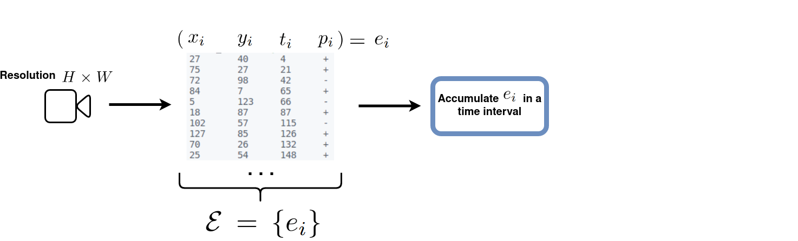
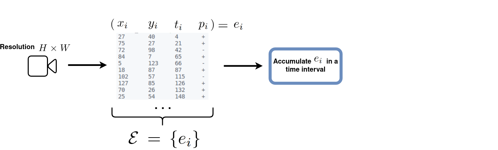

Bina-Rep Event Frames: a Simple And Effective Representation For Event-based Cameras

Sami BARCHID José MENNESSON Chaabane DJÉRABA

Introduction
Event Cameras
Video from here: https://www.youtube.com/watch?v=LauQ6LWTkxM
Advantages
- Sparser representation (no redundancy)
- Low latency (~1 µs)
- No motion blur
- High Dynamic Range (60dB vs 140 dB for standard cameras)
- Low energy consumption
Event-based Computer Vision
Conventional vision algorithms cannot be applied directly.
- Asynchronous events instead of frames
- Binary changes instead of intensity values
Event representation
Definition: method that takes asynchronous events as input, and transforms them into an alternative representation (e.g. binary event frames).
Event representation
Definition: method that takes asynchronous events as input, and transforms them into an alternative representation (e.g. binary event frames).
Event representation
Definition: method that takes asynchronous events as input, and transforms them into an alternative representation (e.g. binary event frames).
Objective of this work
Propose a new event representation method to apply standard vision algorithms with event cameras (i.e. 2D frame-like representation).
Contributions
- Bina-Rep, a simple and efficient event representation to obtain a sequence of event frames that are:
- sparse
- more expressive
- A comparative study on object recognition against other SOTA event representation methods that:
- reports competitive results in terms of accuracy and robustness
Event Representation Methods
Various Paradigms
- Invididual events
- Time Surfaces
- Event Frames
Individual Events
Video from: https://www.youtube.com/watch?v=oG0PTP3ogCA
- Asynchronous processing of events (e.g. Spiking Neural Networks)
- Efficient and perfect integration with event cameras
- Performance limited
Time Surfaces
Example computation of HATS, from paper [Sironi2018]
- Extract temporal information of an event stream and expose it as a 2D surface/image
- Easily integrated with conventional CV algorithms
- Robust to noisy events
Event Frames

Example of binary event frame [Kogler2009]
- Accumulate events into 2D frames to feed conventional algorithms
- Popular due to an intuitive representation of edge maps
- Absence of explicit temporal information
- Still achieves competitive results
Link with Bina-Rep
- Follows the Event Frame strategy
- Capable of expressing temporal information without intensive computation
Bina-Rep Event Frames
Binary Event Frames

 


Bina-Rep Event Frames


Bina-Rep Frames Sequence

- Sparser : $T$ bina-rep frames of $N$-bit numbers $ = T \times N$ binary event frames
Difference with similar representations

Model for event-based recognition
Experiments
Datasets and metrics
- Metric used: top-1 accuracy
Implementation Details
- PyTorch 1.8 on one NVIDIA Tesla P100 GPU
- Frames Resolution: $224 \times 224$
- CNN used: ResNet-18[Kaiming2016]
- Trained during 60 epochs using Adam optimizer with a learning rate of $0.001$
- 8-bit
uintrepresentation used for Bina-Rep (i.e. $N=8$)
Comparison with Event Representations (1)

Comparison with Event Representations (2)


Comparison with SOTA


Robustness Analysis
Corruptions


Dataset used: N-Cars[Sironi2018]
Robustness Analysis
severity levels
For a specific corruption: performance are evaluated on increasing severity levels (From $1$ to $5$)
- Background Activity: adds a percentage of noisy events
- Occlusion: increases the occlusion area (percentage of original resolution)

Robustness Analysis
Metric
Relative Acurracy Drop for a given severity level $i$:
$score = \frac{acc_0-acc_i}{acc_0} \times 100$
- $acc_0$ = the accuracy score on clean data
- $acc_i$ = the accuracy score on data corrupted by severity level $i$
- In general, the same evolution is observed for all methods
- Bina-Rep is on par with SOTA event representation methods
- Bina-Rep becomes more robust with more frames ($T \gt 1$)
Conclusion
Discussion
- Bina-Rep event frames express 3 information
- The presence/absence of an event
- The number of events that occured
- The order of these events in the sequence
- Better or competitive performance against SOTA
- Competitive robustness scores against common corruptions of event cameras.
Try it yourself
Available in the Tonic Library

Thank you!
References
- [Kogler2009]: Kogler, et al. "Bio-inspired stereo vision system with silicon retina imagers." International Conference on Computer Vision Systems. Springer, Berlin, Heidelberg, 2009
- [Kaiming2016]: He, Kaiming, et al. "Deep residual learning for image recognition." Proceedings of the IEEE conference on computer vision and pattern recognition. 2016.
- [Sironi2018]: Sironi, et al. "HATS: Histograms of averaged time surfaces for robust event-based object classification." Proceedings of the IEEE Conference on Computer Vision and Pattern Recognition. 2018.
- [Maqueda2018]: Maqueda, et al. "Event-based vision meets deep learning on steering prediction for self-driving cars." Proceedings of the IEEE conference on computer vision and pattern recognition. 2018.